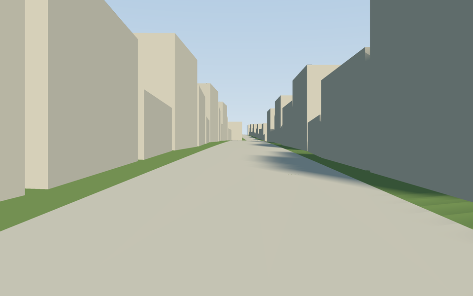
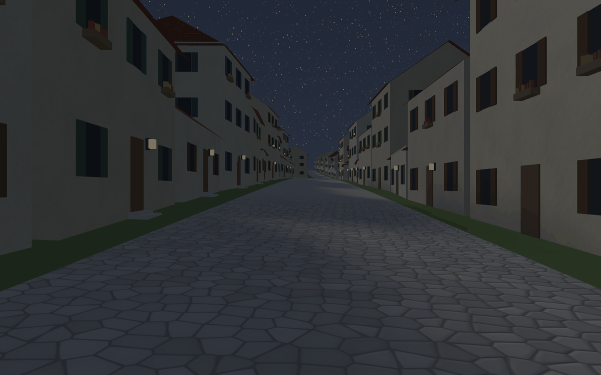
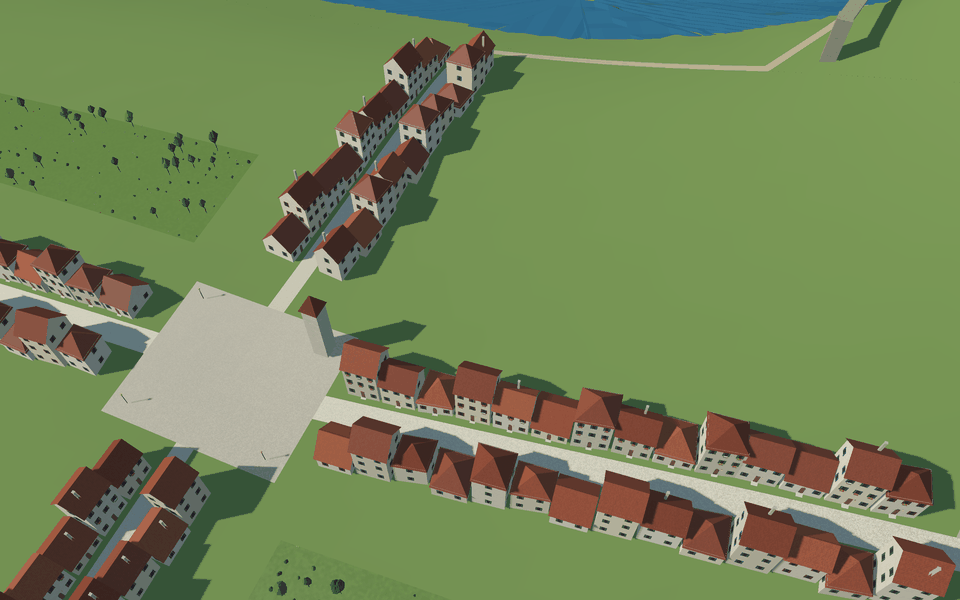
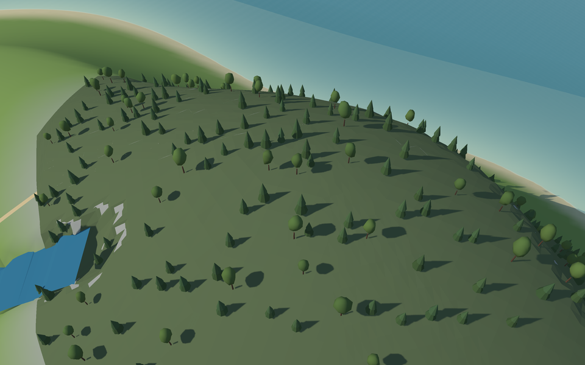

style-plain.yamlstyle.yaml

A town of plain boxes is not a town. Decoration recipes add what makes it believable: doors and windows on the side that faces the street, flower boxes, lamps, trees in the gardens, towers at the gates, bridges that clear the river. They all follow the style rules, so you choose how much of each.
Before: style-plain.yaml |
After: style.yaml |
|---|---|
 |
|
| The same map and relief; only the style differs (the example island). | |
facade dresses the side of a volume that faces a street:
door (round: the share with a rounded top), windows (with shutters), frames (stone
around windows and doors);flower_boxes (with flowers, some glowing), baskets beside the door, ivy climbing the wall
(a foliage material that takes the season);emblem: a six-petal flower in relief above the door, a town’s badge; lamp.With facade: {sides: {spacing: 4.5}} the other open walls (gables, backs, houses at the back of a
plot) get plainer windows, further apart and without a door. Window glass is a single pane.

At night the glow materials light up: the lamps beside the doors and the flower boxes marked glowing.
On ground features, decorate: [{recipe: plants, …}] sows shrubs, trees and flower beds, never on
a volume.

Small models (flowers, lamps, benches, trees…) live in libraries the style names
(models: [models.yaml]) and are drawn as instances: one mesh, many copies, so a forest costs
almost nothing. A model is made of parts (box, cylinder, cone, blob, petals, ogive) with
colours and materials, or read from a binary glTF made elsewhere (file: lamp.glb, in metres,
y up).
shape: {role: model, model: lamp, scale: [0.9, 1.1], turn: random}.decorate: [{recipe: scatter, density: 0.01, models: {lily: 3, lamp: 1}, group: 8}].

The example island's forest: scatter with two models of the library, fir and broadleaf, each built in variants.
Variety. A model can be built in several variants (variants: 3): its parts move (move,
metres) and change size (grow, a share) a little in each, and blobs bend out of round their own
way (wobble; smooth: false for faceted, rings for how finely they are cut). Every copy picks
a variant and changes its colour, warmth and size (vary: {color: 0.12, warmth: 0.06, scale: [0.8,
1.3]}). Cylinders can narrow to top_radius (trunks), and parts can be tipped over (roll,
degrees), so a cylinder can be a wheel.
Gates as models. The ogive part is a pointed arch (width, straight sides, depth; with
border, a frame), so a gate can be built as a model and placed on a point; gate_towers then
skips the gates near points of that kind (except_near: main_gate).
Keeping out of the way. Decorations keep off blocks (clear), lines with a width
(keep_off_lines), models placed on their own and each other (spacing), and can keep to the edge
of their feature (edge).
A layer of categories (-layer biome=biomes.json) colours the terrain and sows vegetation: in the
style, terrain.biomes gives each biome a colour and, optionally, decorate recipes that cover
its cells, never on the map’s polygons nor on its wide lines (rivers, roads).
terrain:
biomes:
conifers: {color: "#5b6a49", decorate: [{recipe: scatter, density: 0.00015, models: {fir: 1}, scale: [3, 5]}]}
meadow: {color: "#b7b47f"}
Rivers always run below the ground around them. With a relief, every water feature with an axis and
a width digs its channel: the water lies freeboard metres (0.6) under the lower bank and never
rises downstream, the bed is depth metres (2) under it, and the ground meets the water at the
river’s edge. Bridges (follow: level lines) that cross water keep their underside clearance
metres (1.5) over it, reach out to dry ground and stand on abutments. In a live scene, where the
terrain exists already, the water stays above_bed metres over the ground of its axis and bridges
still clear it.
Wall lines can carry battlements along their top (battlements: {height, width, gap}), and the
gate_towers recipe can close each gate above an arch (arch: metres from the ground), so a tall
wall keeps its gate a gate.
Pieces carry simpler versions for when they look small on screen, and Go Renderer picks one: the
terrain is written at full resolution and at every 2nd, 4th and 8th vertex, with skirts under the
chunk edges; facade details and plants hide from far away; models can declare simpler versions
(levels: [{below: 0.06, parts: […]}, {below: 0.006}], no parts = not drawn).
To keep files light, quads share their four vertices, instanced models are written once for every chunk that uses them, corner stones are one column per corner, and boxes standing on the ground have no underside: the same town weighs about half.